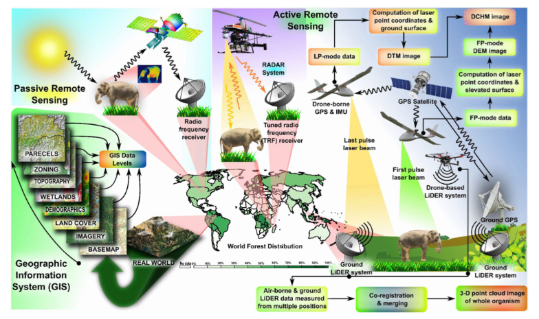
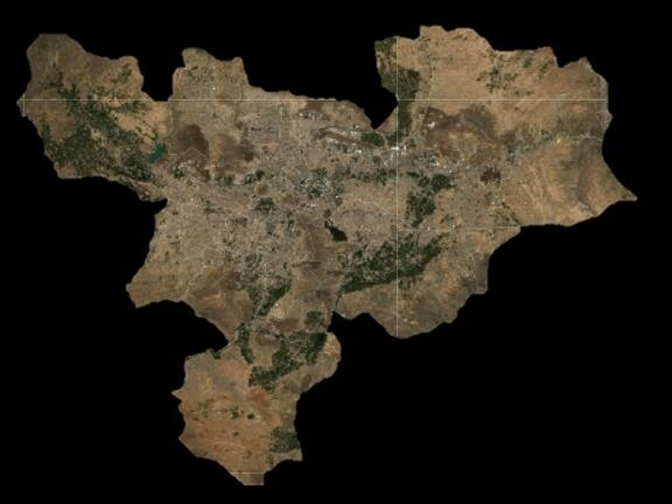
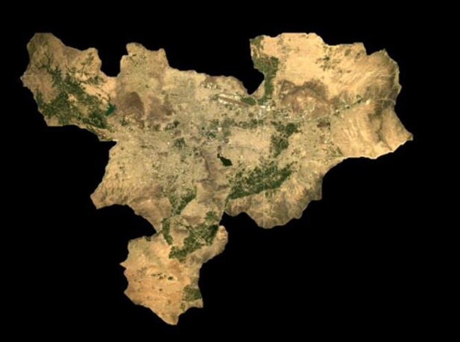

2 Introduction to Remote Sensing & Satellite Data
2.1 Introduction
I currently understand remote sensing as the process of gathering information about the Earth’s surface without direct contact. This is done through passive sensors (like satellite imagery) and active sensors (like LiDAR and RADAR). Passive sensors detect reflected sunlight, while active ones send out pulses (e.g., lasers) and measure what bounces back. Both rely on electromagnetic waves. Remote sensing is often combined with GIS to analyse landscapes, land cover, urban areas, and environmental change. The combination of these techniques, and the data they produce, enables environmental monitoring, resource management, and biodiversity conservation at different spatial scales. Figure 1 summarizes it all.

What caught my attention this week was the role of satellites—these suspended systems orbiting Earth. Remote sensing and satellites go hand-in-hand, but I hadn’t really considered the different types before. There are:
Geostationary satellites – stationary, mainly used for weather, telecoms, and large-scale monitoring. Low Earth Orbit (LEO) satellites – used for high-resolution imaging, orbiting 160–2,000 km above Earth. Sun-synchronous (polar) satellites – orbit Earth in sync with the sun, useful for consistent scientific observations. The sun-synchronous satellites, especially Sentinel-2 and Landsat-8, stood out to me because they’re both widely used in environmental monitoring. Here’s a brief comparison:
| Feature | Landsat-8 | Sentinel-2 |
|---|---|---|
| Resolution | 30m | 10-60m |
| Revisit Time | 16days | 5days |
| Bands | 11 bands | 13 bands |
A term that I think will keep coming up is bands. Bands are like filters for specific wavelengths of light. Each band captures data differently, and depending on which are available, a satellite may be better suited for certain tasks. For instance, near-infrared is good for vegetation monitoring, while shortwave infrared helps with detecting soil moisture. Looking at the image here (figure 2),

I noticed that while both satellites share some bands, they also have unique ones. For example, Landsat-8 includes a Thermal Infrared Sensor (TIRS) which Sentinel-2 lacks—this means Landsat can provide thermal data like land surface temperature (LST), which is valuable in urban heat studies.
Understanding bands will be key in selecting the right satellite for different types of studies. It’s already helping me see how technical features link to practical applications.
2.2 Application
For this section, I wanted to use what I learned in the summary to figure out which satellite is more suitable for land cover classification. A study by Ahady, A.B. and Kaplan, G. compared Landsat-8 and Sentinel-2 data over the city of Kabul, focusing on classification accuracy across four land cover types: water, cropland, urban, and bare land.
Key insights
- Landsat-8 had an overall classification accuracy 85.04%.
- Sentinel-2 had a classification accuracy of 94.26%.
Let’s look at the outputs:


From the images, it’s clear that Sentinel-2 (Figure 4) shows finer detail compared to Landsat-8 (Figure 3). One major reason could be the spatial resolution—Sentinel-2 has higher resolution, which allows it to define features more clearly, especially in urban and mixed-use areas. That likely contributes to its higher classification accuracy.
Another factor could be the revisit time. Sentinel-2 revisits every 5 days, while Landsat-8 takes 16 days. That means more cloud-free images are available from Sentinel-2 within the same time frame, which improves the chance of capturing clearer, more usable data.
Lastly, the spectral bands might also influence classification. As I noted earlier, bands are like filters that let satellites “see” certain land characteristics. The study used surface reflectance bands, and the near-infrared (NIR) band was especially important. For Landsat-8, that’s Band 5, and for Sentinel-2, it’s Band 8. NIR is key for separating vegetation from built-up areas, which makes it critical in land classification.
That said, I don’t think the study’s results mean Sentinel-2 is always better. One limitation might be the classification model used. Also, I wonder whether both satellite images fully covered the same tile or whether mosaicking was done. That could affect consistency and reduce the robustness of the comparison.
So, while Sentinel-2 performed better in this study, context matters. Landsat might still be more suitable in other scenarios—especially where thermal data (like LST) or historical depth is needed.
2.3 Reflection
It’s the first week of the term, and to be honest, it’s been a bit of a slow start. I’m still figuring out what I will take away from this course. Probable by Week 10 I will have a clearer answer. For now, I’ve got a much better grasp of the basics of remote sensing: types of sensors, surface reflectance, atmospheric interference, and how satellites and bands come into play. It’s a lot to take in, but I’m starting to connect the dots.
Something I’ve been thinking about is whether we can combine Landsat and Sentinel data to make better sense of climate change. Landsat has the long archive, and Sentinel gives more frequent and detailed images. Putting them together could help us spot trends over time—like, are we really seeing lasting climate change, or are we just in a long seasonal cycle that feels different but has happened before? This is a big question, especially in Europe where climate change is felt. Like snow not falling in London like how it did in previous years. Having both satellites working together might help reveal whether we’re dealing with natural variation or a real shift.
Remote sensing, I believe will have more impact in developing countries. Ghana as a developing country could benefit from as it can monitor the land use, deforestation, and pollution. This could help in planning and decision-making. For instance, the Sentinel-5P satellite can monitor pollution levels in the atmosphere. This could be useful in Accra, where pollution levels are high.
Also, about SNAP—yeah, that practical was rough. Clunky interface, laggy tools, not fun. But I did get a feel for the kind of hands-on work remote sensing really involves.